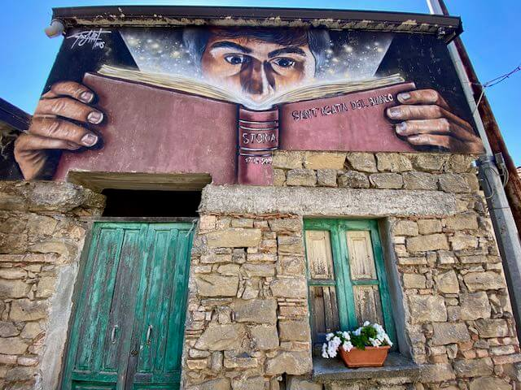
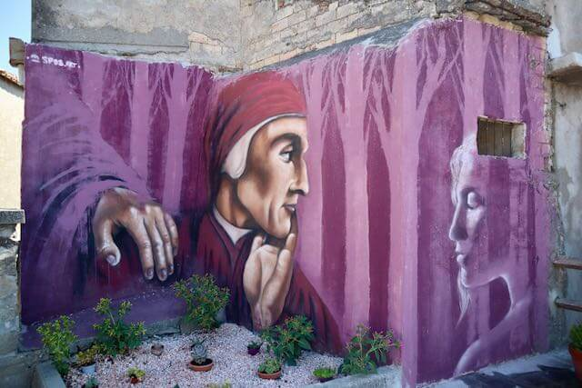
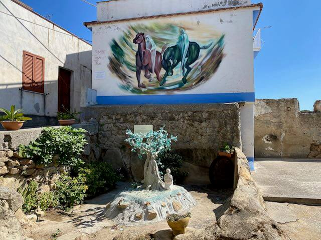
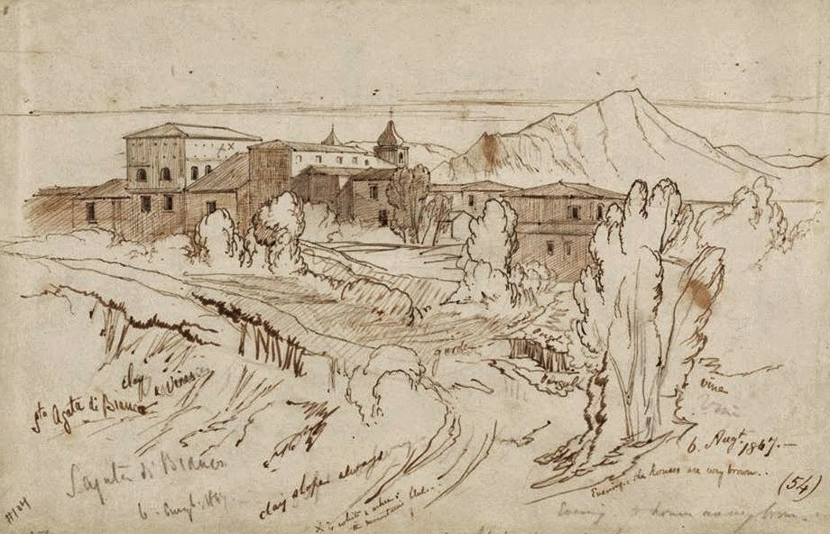
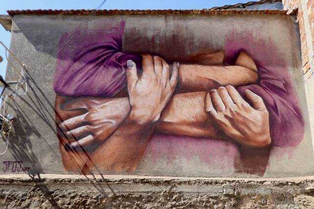
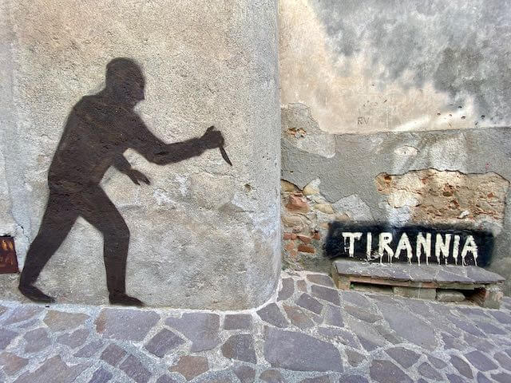

Sant'Agata del Bianco
Il desiderio di non abbellire un borgo, ma di accenderlo. Benvenuti nel paese della street art, dei palmenti e della memoria letteraria.
Altitudine
405 m s.l.m.
Abitanti
Circa 560
Street Art
Oltre 30 murales e porte dipinte
Cultura
Musica, Sculture e Musei a cielo aperto
Accendere il Borgo
Riaccendere la Luce della Speranza
Sant'Agata del Bianco non ha voluto semplicemente "decorare" o "abbellire" le proprie pareti. L'ambizione dell'amministrazione e della comunità locale è stata quella di "accendere" il paese, azionando un interruttore ideale contro lo spopolamento e l'abbandono. L'emblema di questa rinascita è il murale del bottone ON/OFF: un grande interruttore dipinto sulla roccia che simboleggia l'accensione dell'energia sociale e della rinascita artistica del paese.
Un Messaggio per il Visitatore
A chiunque giunga a Sant'Agata, il borgo lascia un messaggio profondo: "Non essere un semplice spettatore che passa per caso. Lasciati accendere anche tu. Esplora le nostre strade come pagine di un libro e porta con te la luce del riscatto di questa terra." La street art non è solo per gli occhi, ma è un ponte emotivo tra il passato rurale e chi viene a trovarci nel presente.
Il Percorso dei Murales
Un Museo a Cielo Aperto
Le pareti del borgo sono una galleria d'arte permanente curata in particolar modo dagli artisti Andrea Sposari (Spos.art) e Antonio Zappia. Le loro opere, sparse tra i vicoli del centro storico, donano nuova linfa alle pareti del paese. L'opera simbolo è il murale di Tibi e Tascia (realizzato da Sposari in Piazza Diritti dei Bambini), che ritrae con toni poetici i due ragazzi protagonisti del romanzo di Saverio Strati, mentre altre creazioni emblematiche come la "Ragazza afgana" o la "Dea Artemide" portano la prestigiosa firma di Zappia. Ogni dipinto fa tornare in vita i personaggi della letteratura e le tradizioni locali.
La Via delle Porte Pinte
I vecchi portoni delle case del centro storico sono stati trasformati nella suggestiva "Via delle Porte Pinte". Ogni porta è decorata con dipinti ispirati alle opere di Saverio Strati, come "Piccolo grande Sud", "L'uomo in fondo al pozzo" e "Il selvaggio di Santa Venere". Questo percorso crea una narrazione continua in cui l'architettura si fonde con le parole dello scrittore.
Saverio Strati: lo Scrittore
La Voce del Piccolo Grande Sud
Saverio Strati (1924-2014) è lo scrittore più illustre nato a Sant’Agata del Bianco. Autodidatta, lavorò come muratore prima di intraprendere gli studi universitari e affermarsi nel panorama letterario italiano. Con i suoi romanzi, tra cui spicca "Il selvaggio di Santa Venere" (Premio Campiello 1977), ha raccontato il duro mondo contadino, le migrazioni e il rapporto viscerale con la propria terra con uno stile realistico ed emotivo.
La Casa Natale e la Memoria
La casa natale di Saverio Strati è oggi una casa-museo aperta alle visite. All'esterno si può ammirare il suo ritratto dipinto sulla facciata e la celebre frase: “Qui c’è luce abbagliante. Anche nell’inverno c’è luce abbagliante… Si potrebbe fare di questa terra il paradiso”. All'interno sono custoditi arredi d'epoca, fotografie storiche e documenti che celebrano la sua eredità culturale.
Museo delle Cose Perdute
Antonio Scarfone e il Disordine Deliberato
Accanto alla casa natale di Saverio Strati si trova il Museo delle Cose Perdute, uno spazio ideato dall'artista locale Antonio Scarfone. Qui, vecchi attrezzi della vita contadina, utensili quotidiani, mobili, fotografie e abiti dismessi sono stati salvati dall'oblio e ordinati in un affascinante "disordine voluto". Il museo non segue schemi tradizionali, ma invita i visitatori a perdersi nei ricordi della memoria collettiva del paese.
Il Giardino del Pensiero e le Finestre Narranti
Adiacente al museo, il Giardino del Pensiero (un piccolo anfiteatro in pietra verde) e le Finestre Narranti arricchiscono il percorso. Si tratta di sculture in ferro ricavate da materiali di scarto e incorniciate nelle antiche finestre del borgo, che riportano versi dello scrittore e riproducono scene rurali, creando un dialogo suggestivo con il visitatore.
Vincenzo Baldissarro: l'Artista Rupestre
Le Sirene Dormienti e l'Antico Palmento
Poco fuori dal centro abitato, in un podere immerso tra gli ulivi e affacciato sulla "montagna blu d'Aspromonte", sorge un'opera rupestre magica: le Sirene Dormienti. Scolpite a mano libera dallo scultore e bracciante agricolo Vincenzo Baldissarro, le figure prendono forma direttamente sulla pietra arenaria di un antico palmento bizantino, utilizzato in passato per la pigiatura dell'uva.
La leggenda vuole che le sirene, risalite lungo la fiumara La Verde per sfuggire a Poseidone, si siano addormentate sfinite nelle vasche del palmento, venendo pietrificate per l'eternità da un dio benevolo.
Orfeo, Euridice e la Natività nella Roccia
Oltre alle sirene, il Maestro Vincenzo Baldissarro ha scolpito nella roccia arenaria altre figure di straordinaria fattura: il Cavallo di Troia, il Piede di Polifemo, un abbraccio tra Orfeo ed Euridice e, all'interno di una grotta naturale del podere, una suggestiva Natività di Gesù. Queste opere rappresentano una straordinaria sintesi tra l'archeologia viticola rupestre e l'arte contemporanea spontanea.
Tradizioni e Cultura
Street Art
Una galleria d'arte diffusa all'aperto, con oltre 30 opere e porte dipinte che decorano le case storiche.
Letteratura
La memoria di Saverio Strati rivive nei murales, nelle citazioni e nella casa-museo a lui dedicata.
Antichi Palmenti
La millenaria tradizione vinicola del borgo si rivela nei palmenti rupestri scavati nella pietra arenaria.
Scultura Rupestre
Le sculture di Vincenzo Baldissarro intagliate nella pietra arenaria tra palmenti e uliveti secolari.
I Murales del Borgo
Una passeggiata visiva tra le opere della street art a cielo aperto di Sant'Agata






Info Utili
Come Arrivare
In Auto: SS106 Jonica, uscita Bianco o Bovalino.
Seguire le indicazioni per Sant’Agata del Bianco (SP70).
Dista circa 25 km da Siderno e 90 km da Reggio Calabria.
Strade panoramiche, parcheggio nel centro abitato.
Comune e Informazioni
Comune di Sant'Agata del Bianco
Piazza Municipio, 1
89030 Sant'Agata del Bianco (RC)
Tel: 0964 812025
Sito web:
www.comune.santagatadelbianco.rc.it
Percorso dei Murales
Il percorso artistico si snoda nel centro storico. È possibile seguire una mappa disponibile presso l’ufficio informazioni comunali o scaricabile dal sito del Comune. Il tragitto comprende la casa natale di Saverio Strati, il Museo delle Cose Perdute, il Giardino del Pensiero e le Finestre Narranti.
Ente Parco Nazionale dell'Aspromonte
Sede: Via Aurora, 1 - Gambarie, 89057 Santo
Stefano Aspromonte (RC)
Tel: 0965 743060
Email:
info.posta@parconazionaleaspromonte.it
Sito web:
www.parconazionaleaspromonte.it